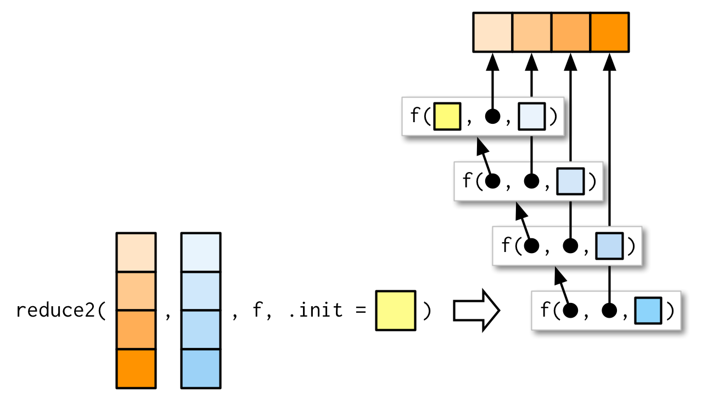
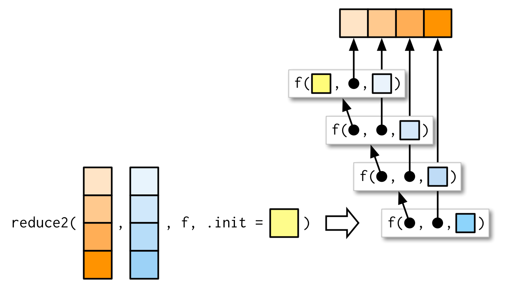

1 Functionals
1.1 Introduction
To become significantly more reliable, code must become more transparent. In particular, nested conditions and loops must be viewed with great suspicion. Complicated control flows confuse programmers. Messy code often hides bugs.
— Bjarne Stroustrup
A functional is a function that takes a function as an input and returns a vector as output. Here’s a simple functional: it calls the function provided as input with 1000 random uniform numbers.
randomise <- function(f) f(runif(1e3))
randomise(mean)
#> [1] 0.506
randomise(mean)
#> [1] 0.501
randomise(sum)
#> [1] 489The chances are that you’ve already used a functional. You might have used for-loop replacements like base R’s lapply(), apply(), and tapply(); or purrr’s map(); or maybe you’ve used a mathematical functional like integrate() or optim().
A common use of functionals is as an alternative to for loops. For loops have a bad rap in R because many people believe they are slow1, but the real downside of for loops is that they’re very flexible: a loop conveys that you’re iterating, but not what should be done with the results. Just as it’s better to use while than repeat, and it’s better to use for than while (Section ??), it’s better to use a functional than for. Each functional is tailored for a specific task, so when you recognise the functional you immediately know why it’s being used.
If you’re an experienced for loop user, switching to functionals is typically a pattern matching exercise. You look at the for loop and find a functional that matches the basic form. If one doesn’t exist, don’t try and torture an existing functional to fit the form you need. Instead, just leave it as a for loop! (Or once you’ve repeated the same loop two or more times, maybe think about writing your own functional).
Outline
Section 1.2 introduces your first functional:
purrr::map().Section 1.3 demonstrates how you can combine multiple simple functionals to solve a more complex problem and discusses how purrr style differs from other approaches.
Section 1.4 teaches you about 18 (!!) important variants of
purrr::map(). Fortunately, their orthogonal design makes them easy to learn, remember, and master.Section 1.5 introduces a new style of functional:
purrr::reduce().reduce()systematically reduces a vector to a single result by applying a function that takes two inputs.Section 1.6 teaches you about predicates: functions that return a single
TRUEorFALSE, and the family of functionals that use them to solve common problems.Section 1.7 reviews some functionals in base R that are not members of the map, reduce, or predicate families.
Prerequisites
This chapter will focus on functionals provided by the purrr package.2 These functions have a consistent interface that makes it easier to understand the key ideas than their base equivalents, which have grown organically over many years. I’ll compare and contrast base R functions as we go, and then wrap up the chapter with a discussion of base functionals that don’t have purrr equivalents.
1.2 My first functional: map()
The most fundamental functional is purrr::map()3. It takes a vector and a function, calls the function once for each element of the vector, and returns the results in a list. In other words, map(1:3, f) is equivalent to list(f(1), f(2), f(3)).
triple <- function(x) x * 3
map(1:3, triple)
#> [[1]]
#> [1] 3
#>
#> [[2]]
#> [1] 6
#>
#> [[3]]
#> [1] 9Or, graphically:

The implementation of map() is quite simple. We allocate a list the same length as the input, and then fill in the list with a for loop. The heart of the implementation is only a handful of lines of code:
simple_map <- function(x, f, ...) {
out <- vector("list", length(x))
for (i in seq_along(x)) {
out[[i]] <- f(x[[i]], ...)
}
out
}The real purrr::map() function has a few differences: it is written in C to eke out every last iota of performance, preserves names, and supports a few shortcuts that you’ll learn about in Section 1.2.2.
The base equivalent to map() is lapply(). The only difference is that lapply() does not support the helpers that you’ll learn about below, so if you’re only using map() from purrr, you can skip the additional dependency and use lapply() directly.
1.2.1 Producing atomic vectors
map() returns a list, which makes it the most general of the map family because you can put anything in a list. But it is inconvenient to return a list when a simpler data structure would do, so there are four more specific variants: map_lgl(), map_int(), map_dbl(), and map_chr(). Each returns an atomic vector of the specified type:
# map_chr() always returns a character vector
map_chr(mtcars, typeof)
#> mpg cyl disp hp drat wt qsec vs
#> "double" "double" "double" "double" "double" "double" "double" "double"
#> am gear carb
#> "double" "double" "double"
# map_lgl() always returns a logical vector
map_lgl(mtcars, is.double)
#> mpg cyl disp hp drat wt qsec vs am gear carb
#> TRUE TRUE TRUE TRUE TRUE TRUE TRUE TRUE TRUE TRUE TRUE
# map_int() always returns a integer vector
n_unique <- function(x) length(unique(x))
map_int(mtcars, n_unique)
#> mpg cyl disp hp drat wt qsec vs am gear carb
#> 25 3 27 22 22 29 30 2 2 3 6
# map_dbl() always returns a double vector
map_dbl(mtcars, mean)
#> mpg cyl disp hp drat wt qsec vs am gear
#> 20.091 6.188 230.722 146.688 3.597 3.217 17.849 0.438 0.406 3.688
#> carb
#> 2.812purrr uses the convention that suffixes, like _dbl(), refer to the output. All map_*() functions can take any type of vector as input. These examples rely on two facts: mtcars is a data frame, and data frames are lists containing vectors of the same length. This is more obvious if we draw a data frame with the same orientation as vector:

All map functions always return an output vector the same length as the input, which implies that each call to .f must return a single value. If it does not, you’ll get an error:
pair <- function(x) c(x, x)
map_dbl(1:2, pair)
#> Error: Result 1 must be a single double, not an integer vector of length 2This is similar to the error you’ll get if .f returns the wrong type of result:
map_dbl(1:2, as.character)
#> Error: Can't coerce element 1 from a character to a doubleIn either case, it’s often useful to switch back to map(), because map() can accept any type of output. That allows you to see the problematic output, and figure out what to do with it.
map(1:2, pair)
#> [[1]]
#> [1] 1 1
#>
#> [[2]]
#> [1] 2 2
map(1:2, as.character)
#> [[1]]
#> [1] "1"
#>
#> [[2]]
#> [1] "2"Base R has two apply functions that can return atomic vectors: sapply() and vapply(). I recommend that you avoid sapply() because it tries to simplify the result, so it can return a list, a vector, or a matrix. This makes it difficult to program with, and it should be avoided in non-interactive settings. vapply() is safer because it allows you to provide a template, FUN.VALUE, that describes the output shape. If you don’t want to use purrr, I recommend you always use vapply() in your functions, not sapply(). The primary downside of vapply() is its verbosity: for example, the equivalent to map_dbl(x, mean, na.rm = TRUE) is vapply(x, mean, na.rm = TRUE, FUN.VALUE = double(1)).
1.2.2 Anonymous functions and shortcuts
Instead of using map() with an existing function, you can create an inline anonymous function (as mentioned in Section ??):
map_dbl(mtcars, function(x) length(unique(x)))
#> mpg cyl disp hp drat wt qsec vs am gear carb
#> 25 3 27 22 22 29 30 2 2 3 6Anonymous functions are very useful, but the syntax is verbose. So purrr supports a special shortcut:
map_dbl(mtcars, ~ length(unique(.x)))
#> mpg cyl disp hp drat wt qsec vs am gear carb
#> 25 3 27 22 22 29 30 2 2 3 6This works because all purrr functions translate formulas, created by ~ (pronounced “twiddle”), into functions. You can see what’s happening behind the scenes by calling as_mapper():
as_mapper(~ length(unique(.x)))
#> <lambda>
#> function (..., .x = ..1, .y = ..2, . = ..1)
#> length(unique(.x))
#> attr(,"class")
#> [1] "rlang_lambda_function" "function"The function arguments look a little quirky but allow you to refer to . for one argument functions, .x and .y for two argument functions, and ..1, ..2, ..3, etc, for functions with an arbitrary number of arguments. . remains for backward compatibility but I don’t recommend using it because it’s easily confused with the . used by magrittr’s pipe.
This shortcut is particularly useful for generating random data:
x <- map(1:3, ~ runif(2))
str(x)
#> List of 3
#> $ : num [1:2] 0.281 0.53
#> $ : num [1:2] 0.433 0.917
#> $ : num [1:2] 0.0275 0.8249Reserve this syntax for short and simple functions. A good rule of thumb is that if your function spans lines or uses {}, it’s time to give it a name.
The map functions also have shortcuts for extracting elements from a vector, powered by purrr::pluck(). You can use a character vector to select elements by name, an integer vector to select by position, or a list to select by both name and position. These are very useful for working with deeply nested lists, which often arise when working with JSON.
x <- list(
list(-1, x = 1, y = c(2), z = "a"),
list(-2, x = 4, y = c(5, 6), z = "b"),
list(-3, x = 8, y = c(9, 10, 11))
)
# Select by name
map_dbl(x, "x")
#> [1] 1 4 8
# Or by position
map_dbl(x, 1)
#> [1] -1 -2 -3
# Or by both
map_dbl(x, list("y", 1))
#> [1] 2 5 9
# You'll get an error if a component doesn't exist:
map_chr(x, "z")
#> Error: Result 3 must be a single string, not NULL of length 0
# Unless you supply a .default value
map_chr(x, "z", .default = NA)
#> [1] "a" "b" NAIn base R functions, like lapply(), you can provide the name of the function as a string. This isn’t tremendously useful as lapply(x, "f") is almost always equivalent to lapply(x, f) and is more typing.
1.2.3 Passing arguments with ...
It’s often convenient to pass along additional arguments to the function that you’re calling. For example, you might want to pass na.rm = TRUE along to mean(). One way to do that is with an anonymous function:
But because the map functions pass ... along, there’s a simpler form available:
map_dbl(x, mean, na.rm = TRUE)
#> [1] 3.0 5.5This is easiest to understand with a picture: any arguments that come after f in the call to map() are inserted after the data in individual calls to f():

It’s important to note that these arguments are not decomposed; or said another way, map() is only vectorised over its first argument. If an argument after f is a vector, it will be passed along as is:

(You’ll learn about map variants that are vectorised over multiple arguments in Sections 1.4.2 and 1.4.5.)
Note there’s a subtle difference between placing extra arguments inside an anonymous function compared with passing them to map(). Putting them in an anonymous function means that they will be evaluated every time f() is executed, not just once when you call map(). This is easiest to see if we make the additional argument random:
1.2.4 Argument names
In the diagrams, I’ve omitted argument names to focus on the overall structure. But I recommend writing out the full names in your code, as it makes it easier to read. map(x, mean, 0.1) is perfectly valid code, but will call mean(x[[1]], 0.1) so it relies on the reader remembering that the second argument to mean() is trim. To avoid unnecessary burden on the brain of the reader4, be kind and write map(x, mean, trim = 0.1).
This is the reason why the arguments to map() are a little odd: instead of being x and f, they are .x and .f. It’s easiest to see the problem that leads to these names using simple_map() defined above. simple_map() has arguments x and f so you’ll have problems whenever the function you are calling has arguments x or f:
boostrap_summary <- function(x, f) {
f(sample(x, replace = TRUE))
}
simple_map(mtcars, boostrap_summary, f = mean)
#> Error in mean.default(x[[i]], ...): 'trim' must be numeric of length oneThe error is a little bewildering until you remember that the call to simple_map() is equivalent to simple_map(x = mtcars, f = mean, bootstrap_summary) because named matching beats positional matching.
purrr functions reduce the likelihood of such a clash by using .f and .x instead of the more common f and x. Of course this technique isn’t perfect (because the function you are calling might still use .f and .x), but it avoids 99% of issues. The remaining 1% of the time, use an anonymous function.
Base functions that pass along ... use a variety of naming conventions to prevent undesired argument matching:
The apply family mostly uses capital letters (e.g. 
XandFUN).transform()uses the more exotic prefix_: this makes the name non-syntactic so it must always be surrounded in`, as described in Section ??. This makes undesired matches extremely unlikely.Other functionals like
uniroot()andoptim()make no effort to avoid clashes but they tend to be used with specially created functions so clashes are less likely.
1.2.5 Varying another argument
So far the first argument to map() has always become the first argument to the function. But what happens if the first argument should be constant, and you want to vary a different argument? How do you get the result in this picture?

It turns out that there’s no way to do it directly, but there are two tricks you can use instead. To illustrate them, imagine I have a vector that contains a few unusual values, and I want to explore the effect of different amounts of trimming when computing the mean. In this case, the first argument to mean() will be constant, and I want to vary the second argument, trim.
-
The simplest technique is to use an anonymous function to rearrange the argument order:
This is still a little confusing because I’m using both
xand.x. You can make it a little clearer by abandoning the~helper: -
Sometimes, if you want to be (too) clever, you can take advantage of R’s flexible argument matching rules (as described in Section ??). For example, in this example you can rewrite
mean(x, trim = 0.1)asmean(0.1, x = x), so you could write the call tomap_dbl()as:map_dbl(trims, mean, x = x) #> [1] -0.3500 0.0434 0.0354 0.0502I don’t recommend this technique as it relies on the reader’s familiarity with both the argument order to
.f, and R’s argument matching rules.
You’ll see one more alternative in Section 1.4.5.
1.2.6 Exercises
Use
as_mapper()to explore how purrr generates anonymous functions for the integer, character, and list helpers. What helper allows you to extract attributes? Read the documentation to find out.map(1:3, ~ runif(2))is a useful pattern for generating random numbers, butmap(1:3, runif(2))is not. Why not? Can you explain why it returns the result that it does?-
Use the appropriate
map()function to:Compute the standard deviation of every column in a numeric data frame.
Compute the standard deviation of every numeric column in a mixed data frame. (Hint: you’ll need to do it in two steps.)
Compute the number of levels for every factor in a data frame.
-
The following code simulates the performance of a t-test for non-normal data. Extract the p-value from each test, then visualise.
-
The following code uses a map nested inside another map to apply a function to every element of a nested list. Why does it fail, and what do you need to do to make it work?
-
Use
map()to fit linear models to themtcarsdataset using the formulas stored in this list: -
Fit the model
mpg ~ dispto each of the bootstrap replicates ofmtcarsin the list below, then extract the \(R^2\) of the model fit (Hint: you can compute the \(R^2\) withsummary().)
1.3 Purrr style
Before we go on to explore more map variants, let’s take a quick look at how you tend to use multiple purrr functions to solve a moderately realistic problem: fitting a model to each subgroup and extracting a coefficient of the model. For this toy example, I’m going to break the mtcars data set down into groups defined by the number of cylinders, using the base split function:
by_cyl <- split(mtcars, mtcars$cyl)This creates a list of three data frames: the cars with 4, 6, and 8 cylinders respectively.
Now imagine we want to fit a linear model, then extract the second coefficient (i.e. the slope). The following code shows how you might do that with purrr:
by_cyl %>%
map(~ lm(mpg ~ wt, data = .x)) %>%
map(coef) %>%
map_dbl(2)
#> 4 6 8
#> -5.65 -2.78 -2.19(If you haven’t seen %>%, the pipe, before, it’s described in Section ??.)
I think this code is easy to read because each line encapsulates a single step, you can easily distinguish the functional from what it does, and the purrr helpers allow us to very concisely describe what to do in each step.
How would you attack this problem with base R? You certainly could replace each purrr function with the equivalent base function:
by_cyl %>%
lapply(function(data) lm(mpg ~ wt, data = data)) %>%
lapply(coef) %>%
vapply(function(x) x[[2]], double(1))
#> 4 6 8
#> -5.65 -2.78 -2.19But this isn’t really base R since we’re using the pipe. To tackle purely in base I think you’d use an intermediate variable, and do more in each step:
models <- lapply(by_cyl, function(data) lm(mpg ~ wt, data = data))
vapply(models, function(x) coef(x)[[2]], double(1))
#> 4 6 8
#> -5.65 -2.78 -2.19Or, of course, you could use a for loop:
slopes <- double(length(by_cyl))
for (i in seq_along(by_cyl)) {
model <- lm(mpg ~ wt, data = by_cyl[[i]])
slopes[[i]] <- coef(model)[[2]]
}
slopes
#> [1] -5.65 -2.78 -2.19It’s interesting to note that as you move from purrr to base apply functions to for loops you tend to do more and more in each iteration. In purrr we iterate 3 times (map(), map(), map_dbl()), with apply functions we iterate twice (lapply(), vapply()), and with a for loop we iterate once. I prefer more, but simpler, steps because I think it makes the code easier to understand and later modify.
1.4 Map variants
There are 23 primary variants of map(). So far, you’ve learned about five (map(), map_lgl(), map_int(), map_dbl() and map_chr()). That means that you’ve got 18 (!!) more to learn. That sounds like a lot, but fortunately the design of purrr means that you only need to learn five new ideas:
- Output same type as input with
modify() - Iterate over two inputs with
map2(). - Iterate with an index using
imap() - Return nothing with
walk(). - Iterate over any number of inputs with
pmap().
The map family of functions has orthogonal input and outputs, meaning that we can organise all the family into a matrix, with inputs in the rows and outputs in the columns. Once you’ve mastered the idea in a row, you can combine it with any column; once you’ve mastered the idea in a column, you can combine it with any row. That relationship is summarised in the following table:
| List | Atomic | Same type | Nothing | |
|---|---|---|---|---|
| One argument | map() |
map_lgl(), … |
modify() |
walk() |
| Two arguments | map2() |
map2_lgl(), … |
modify2() |
walk2() |
| One argument + index | imap() |
imap_lgl(), … |
imodify() |
iwalk() |
| N arguments | pmap() |
pmap_lgl(), … |
— | pwalk() |
1.4.1 Same type of output as input: modify()
Imagine you wanted to double every column in a data frame. You might first try using map(), but map() always returns a list:
df <- data.frame(
x = 1:3,
y = 6:4
)
map(df, ~ .x * 2)
#> $x
#> [1] 2 4 6
#>
#> $y
#> [1] 12 10 8If you want to keep the output as a data frame, you can use modify(), which always returns the same type of output as the input:
modify(df, ~ .x * 2)
#> x y
#> 1 2 12
#> 2 4 10
#> 3 6 8Despite the name, modify() doesn’t modify in place, it returns a modified copy, so if you wanted to permanently modify df, you’d need to assign it:
df <- modify(df, ~ .x * 2)As usual, the basic implementation of modify() is simple, and in fact it’s even simpler than map() because we don’t need to create a new output vector; we can just progressively replace the input. (The real code is a little complex to handle edge cases more gracefully.)
simple_modify <- function(x, f, ...) {
for (i in seq_along(x)) {
x[[i]] <- f(x[[i]], ...)
}
x
}In Section 1.6.2 you’ll learn about a very useful variant of modify(), called modify_if(). This allows you to (e.g.) only double numeric columns of a data frame with modify_if(df, is.numeric, ~ .x * 2).
1.4.2 Two inputs: map2() and friends
map() is vectorised over a single argument, .x. This means it only varies .x when calling .f, and all other arguments are passed along unchanged, thus making it poorly suited for some problems. For example, how would you find a weighted mean when you have a list of observations and a list of weights? Imagine we have the following data:
You can use map_dbl() to compute the unweighted means:
map_dbl(xs, mean)
#> [1] NA 0.463 0.551 0.453 0.564 0.501 0.371 0.443But passing ws as an additional argument doesn’t work because arguments after .f are not transformed:
map_dbl(xs, weighted.mean, w = ws)
#> Error in weighted.mean.default(.x[[i]], ...): 'x' and 'w' must have the same lengthWe need a new tool: a map2(), which is vectorised over two arguments. This means both .x and .y are varied in each call to .f:
map2_dbl(xs, ws, weighted.mean)
#> [1] NA 0.451 0.603 0.452 0.563 0.510 0.342 0.464
The arguments to map2() are slightly different to the arguments to map() as two vectors come before the function, rather than one. Additional arguments still go afterwards:
map2_dbl(xs, ws, weighted.mean, na.rm = TRUE)
#> [1] 0.504 0.451 0.603 0.452 0.563 0.510 0.342 0.464
The basic implementation of map2() is simple, and quite similar to that of map(). Instead of iterating over one vector, we iterate over two in parallel:
simple_map2 <- function(x, y, f, ...) {
out <- vector("list", length(x))
for (i in seq_along(x)) {
out[[i]] <- f(x[[i]], y[[i]], ...)
}
out
}One of the big differences between map2() and the simple function above is that map2() recycles its inputs to make sure that they’re the same length:

In other words, map2(x, y, f) will automatically behave like map(x, f, y) when needed. This is helpful when writing functions; in scripts you’d generally just use the simpler form directly.
1.4.3 No outputs: walk() and friends
Most functions are called for the value that they return, so it makes sense to capture and store the value with a map() function. But some functions are called primarily for their side-effects (e.g. cat(), write.csv(), or ggsave()) and it doesn’t make sense to capture their results. Take this simple example that displays a welcome message using cat(). cat() returns NULL, so while map() works (in the sense that it generates the desired welcomes), it also returns list(NULL, NULL).
welcome <- function(x) {
cat("Welcome ", x, "!\n", sep = "")
}
names <- c("Hadley", "Jenny")
# As well as generate the welcomes, it also shows
# the return value of cat()
map(names, welcome)
#> Welcome Hadley!
#> Welcome Jenny!
#> [[1]]
#> NULL
#>
#> [[2]]
#> NULLYou could avoid this problem by assigning the results of map() to a variable that you never use, but that would muddy the intent of the code. Instead, purrr provides the walk family of functions that ignore the return values of the .f and instead return .x invisibly5.
walk(names, welcome)
#> Welcome Hadley!
#> Welcome Jenny!My visual depiction of walk attempts to capture the important difference from map(): the outputs are ephemeral, and the input is returned invisibly.

One of the most useful walk() variants is walk2() because a very common side-effect is saving something to disk, and when saving something to disk you always have a pair of values: the object and the path that you want to save it to.

For example, imagine you have a list of data frames (which I’ve created here using split()), and you’d like to save each one to a separate CSV file. That’s easy with walk2():
temp <- tempfile()
dir.create(temp)
cyls <- split(mtcars, mtcars$cyl)
paths <- file.path(temp, paste0("cyl-", names(cyls), ".csv"))
walk2(cyls, paths, write.csv)
dir(temp)
#> [1] "cyl-4.csv" "cyl-6.csv" "cyl-8.csv"Here the walk2() is equivalent to write.csv(cyls[[1]], paths[[1]]), write.csv(cyls[[2]], paths[[2]]), write.csv(cyls[[3]], paths[[3]]).
There is no base equivalent to walk(); either wrap the result of lapply() in invisible() or save it to a variable that is never used.
1.4.4 Iterating over values and indices
There are three basic ways to loop over a vector with a for loop:
- Loop over the elements:
for (x in xs) - Loop over the numeric indices:
for (i in seq_along(xs)) - Loop over the names:
for (nm in names(xs))
The first form is analogous to the map() family. The second and third forms are equivalent to the imap() family which allows you to iterate over the values and the indices of a vector in parallel.
imap() is like map2() in the sense that your .f gets called with two arguments, but here both are derived from the vector. imap(x, f) is equivalent to map2(x, names(x), f) if x has names, and map2(x, seq_along(x), f) if it does not.
imap() is often useful for constructing labels:
imap_chr(iris, ~ paste0("The first value of ", .y, " is ", .x[[1]]))
#> Sepal.Length
#> "The first value of Sepal.Length is 5.1"
#> Sepal.Width
#> "The first value of Sepal.Width is 3.5"
#> Petal.Length
#> "The first value of Petal.Length is 1.4"
#> Petal.Width
#> "The first value of Petal.Width is 0.2"
#> Species
#> "The first value of Species is setosa"If the vector is unnamed, the second argument will be the index:
x <- map(1:6, ~ sample(1000, 10))
imap_chr(x, ~ paste0("The highest value of ", .y, " is ", max(.x)))
#> [1] "The highest value of 1 is 975" "The highest value of 2 is 915"
#> [3] "The highest value of 3 is 982" "The highest value of 4 is 955"
#> [5] "The highest value of 5 is 971" "The highest value of 6 is 696"imap() is a useful helper if you want to work with the values in a vector along with their positions.
1.4.5 Any number of inputs: pmap() and friends
Since we have map() and map2(), you might expect map3(), map4(), map5(), … But where would you stop? Instead of generalising map2() to an arbitrary number of arguments, purrr takes a slightly different tack with pmap(): you supply it a single list, which contains any number of arguments. In most cases, that will be a list of equal-length vectors, i.e. something very similar to a data frame. In diagrams, I’ll emphasise that relationship by drawing the input similar to a data frame.

There’s a simple equivalence between map2() and pmap(): map2(x, y, f) is the same as pmap(list(x, y), f). The pmap() equivalent to the map2_dbl(xs, ws, weighted.mean) used above is:
As before, the varying arguments come before .f (although now they must be wrapped in a list), and the constant arguments come afterwards.
pmap_dbl(list(xs, ws), weighted.mean, na.rm = TRUE)
#> [1] 0.504 0.451 0.603 0.452 0.563 0.510 0.342 0.464
A big difference between pmap() and the other map functions is that pmap() gives you much finer control over argument matching because you can name the components of the list. Returning to our example from Section 1.2.5, where we wanted to vary the trim argument to x, we could instead use pmap():
trims <- c(0, 0.1, 0.2, 0.5)
x <- rcauchy(1000)
pmap_dbl(list(trim = trims), mean, x = x)
#> [1] -6.6740 0.0210 0.0235 0.0151I think it’s good practice to name the components of the list to make it very clear how the function will be called.
It’s often convenient to call pmap() with a data frame. A handy way to create that data frame is with tibble::tribble(), which allows you to describe a data frame row-by-row (rather than column-by-column, as usual): thinking about the parameters to a function as a data frame is a very powerful pattern. The following example shows how you might draw random uniform numbers with varying parameters:
params <- tibble::tribble(
~ n, ~ min, ~ max,
1L, 0, 1,
2L, 10, 100,
3L, 100, 1000
)
pmap(params, runif)
#> [[1]]
#> [1] 0.332
#>
#> [[2]]
#> [1] 53.5 47.6
#>
#> [[3]]
#> [1] 231 715 515 Here, the column names are critical: I’ve carefully chosen to match them to the arguments to
Here, the column names are critical: I’ve carefully chosen to match them to the arguments to runif(), so the pmap(params, runif) is equivalent to runif(n = 1L, min = 0, max = 1), runif(n = 2, min = 10, max = 100), runif(n = 3L, min = 100, max = 1000). (If you have a data frame in hand, and the names don’t match, use dplyr::rename() or similar.)
There are two base equivalents to the pmap() family: Map() and mapply(). Both have significant drawbacks:
Map()vectorises over all arguments so you cannot supply arguments that do not vary.mapply()is the multidimensional version ofsapply(); conceptually it takes the output ofMap()and simplifies it if possible. This gives it similar issues tosapply(). There is no multi-input equivalent ofvapply().
1.4.6 Exercises
Explain the results of
modify(mtcars, 1).-
Rewrite the following code to use
iwalk()instead ofwalk2(). What are the advantages and disadvantages? -
Explain how the following code transforms a data frame using functions stored in a list.
trans <- list( disp = function(x) x * 0.0163871, am = function(x) factor(x, labels = c("auto", "manual")) ) nm <- names(trans) mtcars[nm] <- map2(trans, mtcars[nm], function(f, var) f(var))Compare and contrast the
map2()approach to thismap()approach:mtcars[nm] <- map(nm, ~ trans[[.x]](mtcars[[.x]])) What does
write.csv()return, i.e. what happens if you use it withmap2()instead ofwalk2()?
1.5 Reduce family
After the map family, the next most important family of functions is the reduce family. This family is much smaller, with only two main variants, and is used less commonly, but it’s a powerful idea, gives us the opportunity to discuss some useful algebra, and powers the map-reduce framework frequently used for processing very large datasets.
1.5.1 Basics
reduce() takes a vector of length n and produces a vector of length 1 by calling a function with a pair of values at a time: reduce(1:4, f) is equivalent to f(f(f(1, 2), 3), 4).

reduce() is a useful way to generalise a function that works with two inputs (a binary function) to work with any number of inputs. Imagine you have a list of numeric vectors, and you want to find the values that occur in every element. First we generate some sample data:
l <- map(1:4, ~ sample(1:10, 15, replace = T))
str(l)
#> List of 4
#> $ : int [1:15] 7 1 8 8 3 8 2 4 7 10 ...
#> $ : int [1:15] 3 1 10 2 5 2 9 8 5 4 ...
#> $ : int [1:15] 6 10 9 5 6 7 8 6 10 8 ...
#> $ : int [1:15] 9 8 6 4 4 5 2 9 9 6 ...To solve this challenge we need to use intersect() repeatedly:
out <- l[[1]]
out <- intersect(out, l[[2]])
out <- intersect(out, l[[3]])
out <- intersect(out, l[[4]])
out
#> [1] 8 4reduce() automates this solution for us, so we can write:
reduce(l, intersect)
#> [1] 8 4We could apply the same idea if we wanted to list all the elements that appear in at least one entry. All we have to do is switch from intersect() to union():
reduce(l, union)
#> [1] 7 1 8 3 2 4 10 5 9 6Like the map family, you can also pass additional arguments. intersect() and union() don’t take extra arguments so I can’t demonstrate them here, but the principle is straightforward and I drew you a picture.

As usual, the essence of reduce() can be reduced to a simple wrapper around a for loop:
simple_reduce <- function(x, f) {
out <- x[[1]]
for (i in seq(2, length(x))) {
out <- f(out, x[[i]])
}
out
}The base equivalent is Reduce(). Note that the argument order is different: the function comes first, followed by the vector, and there is no way to supply additional arguments.
1.5.2 Accumulate
The first reduce() variant, accumulate(), is useful for understanding how reduce works, because instead of returning just the final result, it returns all the intermediate results as well:
accumulate(l, intersect)
#> [[1]]
#> [1] 7 1 8 8 3 8 2 4 7 10 10 3 7 10 10
#>
#> [[2]]
#> [1] 1 8 3 2 4 10
#>
#> [[3]]
#> [1] 8 4 10
#>
#> [[4]]
#> [1] 8 4Another useful way to understand reduce is to think about sum(): sum(x) is equivalent to x[[1]] + x[[2]] + x[[3]] + ..., i.e. reduce(x, `+`). Then accumulate(x, `+`) is the cumulative sum:
x <- c(4, 3, 10)
reduce(x, `+`)
#> [1] 17
accumulate(x, `+`)
#> [1] 4 7 171.5.3 Output types
In the above example using +, what should reduce() return when x is short, i.e. length 1 or 0? Without additional arguments, reduce() just returns the input when x is length 1:
reduce(1, `+`)
#> [1] 1This means that reduce() has no way to check that the input is valid:
reduce("a", `+`)
#> [1] "a"What if it’s length 0? We get an error that suggests we need to use the .init argument:
What should .init be here? To figure that out, we need to see what happens when .init is supplied:

So if we call reduce(1, `+`, init) the result will be 1 + init. Now we know that the result should be just 1, so that suggests that .init should be 0:
This also ensures that reduce() checks that length 1 inputs are valid for the function that you’re calling:
reduce("a", `+`, .init = 0)
#> Error in .x + .y: non-numeric argument to binary operatorIf you want to get algebraic about it, 0 is called the identity of the real numbers under the operation of addition: if you add a 0 to any number, you get the same number back. R applies the same principle to determine what a summary function with a zero length input should return:
sum(integer()) # x + 0 = x
#> [1] 0
prod(integer()) # x * 1 = x
#> [1] 1
min(integer()) # min(x, Inf) = x
#> [1] Inf
max(integer()) # max(x, -Inf) = x
#> [1] -InfIf you’re using reduce() in a function, you should always supply .init. Think carefully about what your function should return when you pass a vector of length 0 or 1, and make sure to test your implementation.
1.5.4 Multiple inputs
Very occasionally you need to pass two arguments to the function that you’re reducing. For example, you might have a list of data frames that you want to join together, and the variables you use to join will vary from element to element. This is a very specialised scenario, so I don’t want to spend much time on it, but I do want you to know that reduce2() exists.
The length of the second argument varies based on whether or not .init is supplied: if you have four elements of x, f will only be called three times. If you supply init, f will be called four times.
 

1.5.5 Map-reduce
You might have heard of map-reduce, the idea that powers technology like Hadoop. Now you can see how simple and powerful the underlying idea is: map-reduce is a map combined with a reduce. The difference for large data is that the data is spread over multiple computers. Each computer performs the map on the data that it has, then it sends the result to back to a coordinator which reduces the individual results back to a single result.
As a simple example, imagine computing the mean of a very large vector, so large that it has to be split over multiple computers. You could ask each computer to calculate the sum and the length, and then return those to the coordinator which computes the overall mean by dividing the total sum by the total length.
1.6 Predicate functionals
A predicate is a function that returns a single TRUE or FALSE, like is.character(), is.null(), or all(), and we say a predicate matches a vector if it returns TRUE.
1.6.1 Basics
A predicate functional applies a predicate to each element of a vector. purrr provides seven useful functions which come in three groups:
-
some(.x, .p)returnsTRUEif any element matches;every(.x, .p)returnsTRUEif all elements match;none(.x, .p)returnsTRUEif no element matches.These are similar to
any(map_lgl(.x, .p)),all(map_lgl(.x, .p))andall(map_lgl(.x, negate(.p)))but they terminate early:some()returnsTRUEwhen it sees the firstTRUE, andevery()andnone()returnFALSEwhen they see the firstFALSEorTRUErespectively. detect(.x, .p)returns the value of the first match;detect_index(.x, .p)returns the location of the first match.keep(.x, .p)keeps all matching elements;discard(.x, .p)drops all matching elements.
The following example shows how you might use these functionals with a data frame:
df <- data.frame(x = 1:3, y = c("a", "b", "c"))
detect(df, is.factor)
#> NULL
detect_index(df, is.factor)
#> [1] 0
str(keep(df, is.factor))
#> 'data.frame': 3 obs. of 0 variables
str(discard(df, is.factor))
#> 'data.frame': 3 obs. of 2 variables:
#> $ x: int 1 2 3
#> $ y: chr "a" "b" "c"1.6.2 Map variants
map() and modify() come in variants that also take predicate functions, transforming only the elements of .x where .p is TRUE.
df <- data.frame(
num1 = c(0, 10, 20),
num2 = c(5, 6, 7),
chr1 = c("a", "b", "c"),
stringsAsFactors = FALSE
)
str(map_if(df, is.numeric, mean))
#> List of 3
#> $ num1: num 10
#> $ num2: num 6
#> $ chr1: chr [1:3] "a" "b" "c"
str(modify_if(df, is.numeric, mean))
#> 'data.frame': 3 obs. of 3 variables:
#> $ num1: num 10 10 10
#> $ num2: num 6 6 6
#> $ chr1: chr "a" "b" "c"
str(map(keep(df, is.numeric), mean))
#> List of 2
#> $ num1: num 10
#> $ num2: num 61.6.3 Exercises
Why isn’t
is.na()a predicate function? What base R function is closest to being a predicate version ofis.na()?-
simple_reduce()has a problem whenxis length 0 or length 1. Describe the source of the problem and how you might go about fixing it. Implement the
span()function from Haskell: given a listxand a predicate functionf,span(x, f)returns the location of the longest sequential run of elements where the predicate is true. (Hint: you might findrle()helpful.)Implement
arg_max(). It should take a function and a vector of inputs, and return the elements of the input where the function returns the highest value. For example,arg_max(-10:5, function(x) x ^ 2)should return -10.arg_max(-5:5, function(x) x ^ 2)should returnc(-5, 5). Also implement the matchingarg_min()function.-
The function below scales a vector so it falls in the range [0, 1]. How would you apply it to every column of a data frame? How would you apply it to every numeric column in a data frame?
scale01 <- function(x) { rng <- range(x, na.rm = TRUE) (x - rng[1]) / (rng[2] - rng[1]) }
1.7 Base functionals
To finish up the chapter, here I provide a survey of important base functionals that are not members of the map, reduce, or predicate families, and hence have no equivalent in purrr. This is not to say that they’re not important, but they have more of a mathematical or statistical flavour, and they are generally less useful in data analysis.
1.7.1 Matrices and arrays
map() and friends are specialised to work with one-dimensional vectors. base::apply() is specialised to work with two-dimensional and higher vectors, i.e. matrices and arrays. You can think of apply() as an operation that summarises a matrix or array by collapsing each row or column to a single value. It has four arguments:
X, the matrix or array to summarise.MARGIN, an integer vector giving the dimensions to summarise over, 1 = rows, 2 = columns, etc. (The argument name comes from thinking about the margins of a joint distribution.)FUN, a summary function....other arguments passed on toFUN.
A typical example of apply() looks like this
a2d <- matrix(1:20, nrow = 5)
apply(a2d, 1, mean)
#> [1] 8.5 9.5 10.5 11.5 12.5
apply(a2d, 2, mean)
#> [1] 3 8 13 18You can specify multiple dimensions to MARGIN, which is useful for high-dimensional arrays:
a3d <- array(1:24, c(2, 3, 4))
apply(a3d, 1, mean)
#> [1] 12 13
apply(a3d, c(1, 2), mean)
#> [,1] [,2] [,3]
#> [1,] 10 12 14
#> [2,] 11 13 15There are two caveats to using apply():
Like
base::sapply(), you have no control over the output type; it will automatically be simplified to a list, matrix, or vector. However, you usually useapply()with numeric arrays and a numeric summary function so you are less likely to encounter a problem than withsapply().-
apply()is also not idempotent in the sense that if the summary function is the identity operator, the output is not always the same as the input. -
Never use
apply()with a data frame. It always coerces it to a matrix, which will lead to undesirable results if your data frame contains anything other than numbers.df <- data.frame(x = 1:3, y = c("a", "b", "c")) apply(df, 2, mean) #> Warning in mean.default(newX[, i], ...): argument is not numeric or logical: #> returning NA #> Warning in mean.default(newX[, i], ...): argument is not numeric or logical: #> returning NA #> x y #> NA NA
1.7.2 Mathematical concerns
Functionals are very common in mathematics. The limit, the maximum, the roots (the set of points where f(x) = 0), and the definite integral are all functionals: given a function, they return a single number (or vector of numbers). At first glance, these functions don’t seem to fit in with the theme of eliminating loops, but if you dig deeper you’ll find out that they are all implemented using an algorithm that involves iteration.
Base R provides a useful set:
-
integrate()finds the area under the curve defined byf() -
uniroot()finds wheref()hits zero -
optimise()finds the location of the lowest (or highest) value off()
The following example shows how functionals might be used with a simple function, sin():
integrate(sin, 0, pi)
#> 2 with absolute error < 2.2e-14
str(uniroot(sin, pi * c(1 / 2, 3 / 2)))
#> List of 5
#> $ root : num 3.14
#> $ f.root : num 1.22e-16
#> $ iter : int 2
#> $ init.it : int NA
#> $ estim.prec: num 6.1e-05
str(optimise(sin, c(0, 2 * pi)))
#> List of 2
#> $ minimum : num 4.71
#> $ objective: num -1
str(optimise(sin, c(0, pi), maximum = TRUE))
#> List of 2
#> $ maximum : num 1.57
#> $ objective: num 11.7.3 Exercises
How does
apply()arrange the output? Read the documentation and perform some experiments.What do
eapply()andrapply()do? Does purrr have equivalents?Challenge: read about the fixed point algorithm. Complete the exercises using R.